HƯỚNG DẪN THIẾT LẬP BAN ĐẦU
1. Các thiết lập ban đầu.
Để đảm bảo quá trình thực hiện được xuyên suốt và đúng như quy trình chúng ta cần thiết lập một số thông số ban đầu sau đây:
a) Thiết lập thông số ngầm định.
Bạn vào menu Hệ thống/ 6. Thiết lập thông số chương trình sau đó nhấn chọn vào mục 6.Quản lý kho:
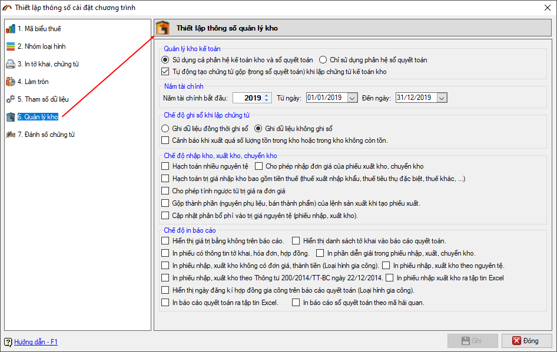
- Lựa chọn “Sử dụng cả phân hệ kế toán kho và Sổ quyết toán” : Đây là lựa chọn khi bạn sử dụng Quyết toán mức độ (2) hoặc (3) như sơ đồ đã giới thiệu trên.
Lựa chọn này còn có thêm tùy chọn "Tự động tạo chứng từ gộp (trong Sổ quyết toán) khi lập chứng từ kế toán kho" bạn nên sử dụng vào tùy chọn này để khi làm phiếu nhập kho, phiếu xuất kho trong phần "Kế toán kho" phần mềm sẽ tự động tạo ra cho bạn phiếu nhập kho, phiếu xuất kho tương ứng trong phần "Sổ quyết toán", tiện cho việc làm báo cáo quyết toán với cơ quan Hải quan sau này.
- Lựa chọn “Chỉ sử dụng phân hệ Sổ quyết toán”: Chọn lựa chọn này nếu bạn sử dụng Quyết toán mức độ (1) theo sơ đồ đã giới thiệu ở trên.
- Năm tài chính: chọn năm tài chính và khoảng thời gian của năm tài chính mặc định khi chọn năm phần mềm sẽ để ngày bắt đầu là 01/01 , ngày kết thúc là 31/12 của năm.
- Chế độ ghi sổ khi nhập chứng từ: Bạn chọn các chế độ mặc định cho các thao tác khi làm chứng từ.
b) Thiết lập quy tắc đánh số chứng từ.
Mặc định khi tạo mới phiếu chứng từ , số chứng từ sẽ được sinh tự động ví dụ PN00001, PX00001. Nếu bạn muốn thay đổi số phiếu theo ký hiệu của công ty thì vào menu “
Hệ thống / 6.Thiết lập thông số chuơng trình sau đó chọn vào 7.Đánh số chứng từ trong danh sách để thực hiện:
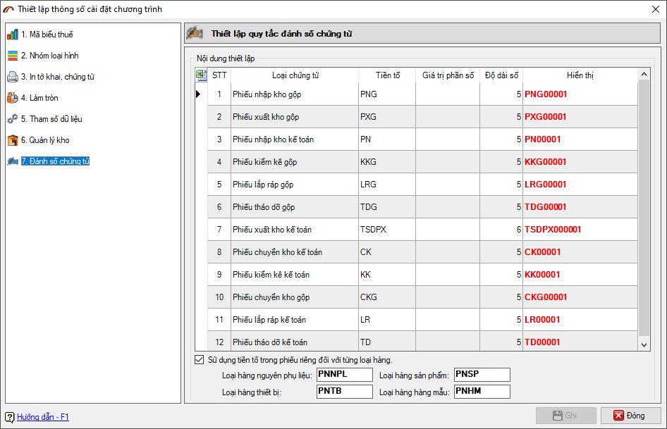
Cột tiền tố: Thiết lập ký hiệu số chứng từ
Cột giá trị phần số: Thiết lập giá trị bắt đầu đánh số cho phiếu, mặc định phần mềm đánh số từ 1.
Cột độ dài số: Thiết lập độ dài số chứng từ phía sau tiền tố, mặc định phần mềm để độ dài số là 5.
Sau khi thiết lập xong bạn nhận nút "Ghi" để lưu thiết lập, bạn lưu ý sau khi đã phát sinh các phiếu chứng từ nhập xuất thì không nên thiết lập lại quy tắc đánh số chứng từ này.
c) Nhập danh sách kho công ty.
Trước khi có thể thực hiện các nghiệp vụ cụ thể bạn cần nhập vào danh sách kho hiện có của công ty, để nhập bạn vào menu “Danh mục/23.Danh mục kho” màn hình nhập liệu hiện ra như sau :
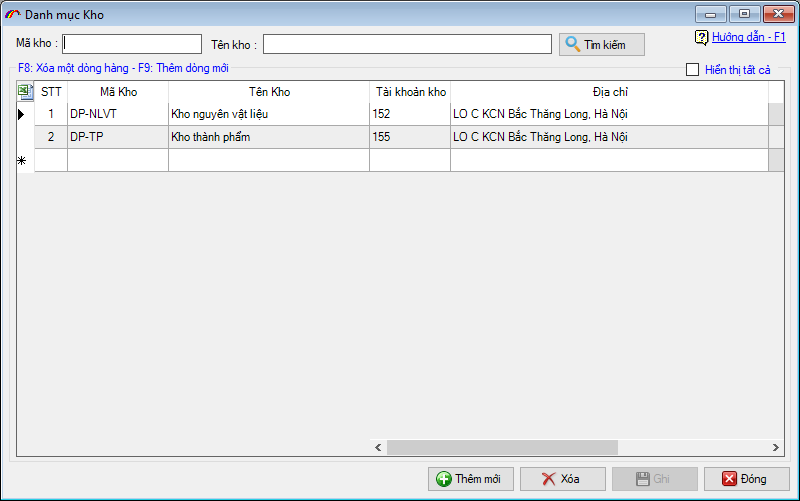
Thông tin kho bao gồm Mã kho và Tên kho, khi kho đã được nhập, xuất (tức là đã sử dụng nhập kho, xuất kho trên các phiếu chứng từ) thì bạn không thể sửa đổi được mã kho, chỉ có thể sửa được tên kho.
Để thêm mới danh sách kho bạn nhập thông tin Mã kho, Tên kho vào danh sách rồi nhấn vào nút “Ghi’ để ghi lại.
Phần mềm quản lý kho cung cấp cho doanh nghiệp chức năng tiện ích Import dữ liệu chứng từ vào phần mềm từ file excel có sẵn (các file excel chứng từ này thường được kết xuất từ phần mềm quản lý kho của doanh nghiệp đang sử dụng theo tháng hoặc theo tuần được lưu thành các thư mục ), vì vậy để hiểu rõ cách thức thực hiện tôi sẽ hướng dẫn các bạn bằng một ví dụ dưới đây.
Bạn vào menu “Kế toán kho/ Import, Export dữ liệu” ở phần loại hình tương ứng với doanh nghiệp đang sử dụng như Gia công, Sản xuất xuất khẩu hoặc Chế xuất:
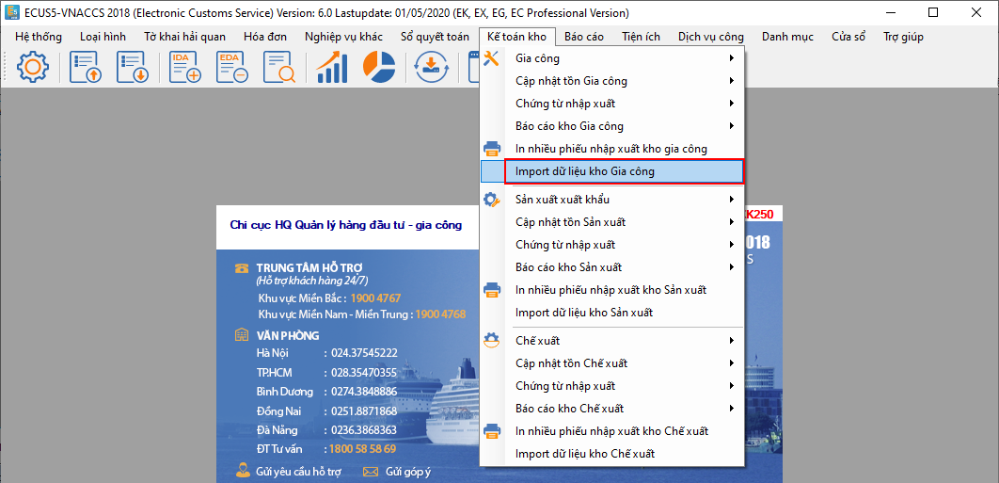
Màn hình danh sách các phiếu mport hiện ra như sau :
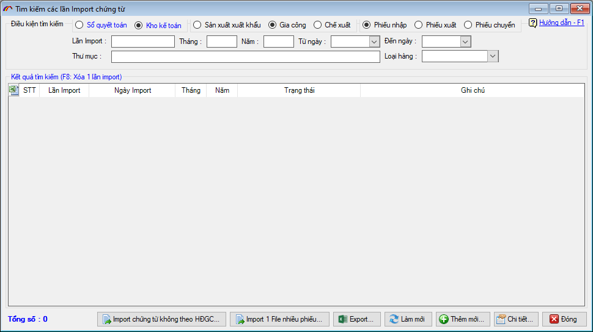
Bạn nhấn vào thêm mới để tạo một lần import phiếu:
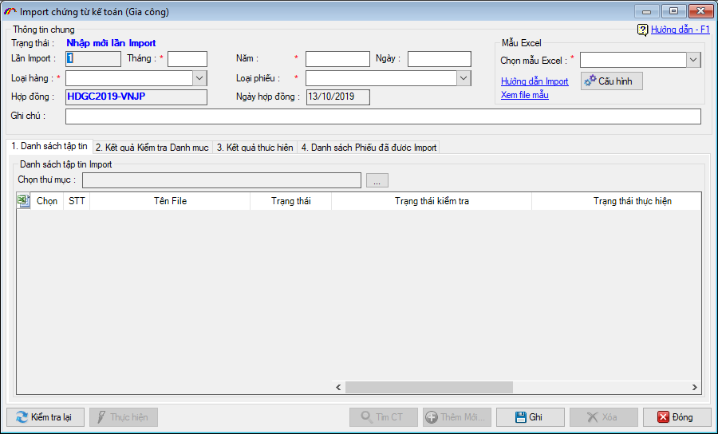
Nhập các thông tin chung lần import:
- Ngày, tháng, năm của lần import,
- Chọn loại hàng đang cần import, chọn loại phiếu là nhập, xuất hay chuyển kho.
Chọn mẫu excel:
- Bạn có thể xem file excel mẫu trước để biết thông tin trước khi chọn mẫu.
Mỗi lần import phiếu bạn có thể import vào một hoặc nhiều phiếu, bạn chỉ cần chỉ đường dẫn thư mục lưu các phiếu trên các file excel có sẵn bằng cách nhấn vào nút có dấu (…).
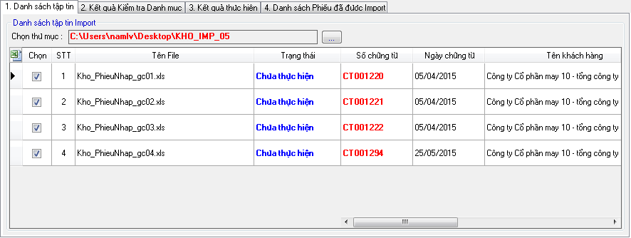
Đồng thời chọn mẫu file excel, thiết lập cấu hình import theo mẫu bạn vừa chọn.
Bạn nhấn vào nút “Cấu hình” để hiện ra cửa sổ thiết lập :
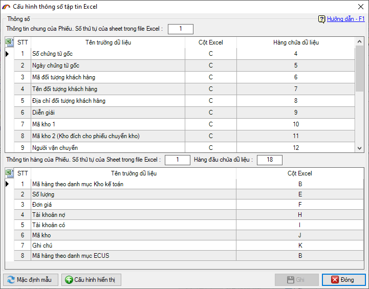
Bạn tiến hành thiết lập các thông số tương ứng trên form thiết lập như sau:
Tại mục thông tin chung phiếu chứng từ:
- Nhập vào số thứ tự của Sheet có dữ liệu thông tin chung của phiếu chứng từ.
- Thiết lập thứ tự hàng, cột excel tương ứng với trường dữ liệu.
Tại mục thông tin và thông tin hàng phiếu thu :
- Nhập vào số thự tự của Sheet có chứa dữ liệu đang cần import.
- Nhập vào hàng đầu tiên chứa dữ liệu.
- Thiết lập thứ tự Hàng – Cột tương ứng cho các chỉ tiêu tại cột “Tên cột dữ liệu”.
File excel mẫu :
Để hỗ trợ việc nhập liệu sẵn dữ liệu trên file excel import phần mềm có hỗ trợ một số file mẫu để bạn lựa chọn bạn nhấn vào dòng link “Xem file excel mẫu”, ví dụ :
Mẫu: IMP/SOCT-PNX01:
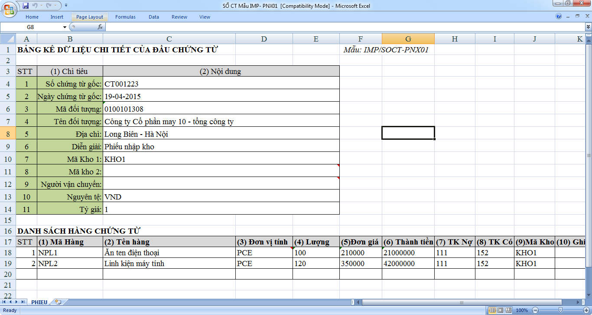
Mẫu: IMP/KHO-PNX03:
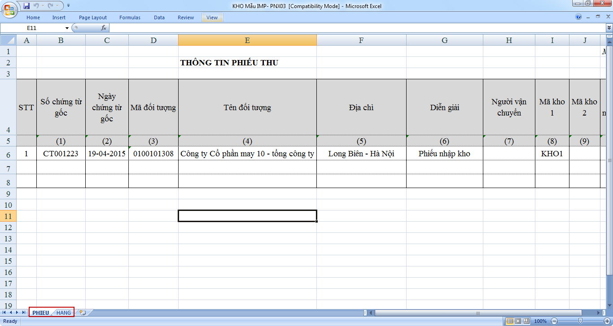
Tương ứng với mẫu IMP/SOCT-PNX01 ta có thông số thiết lập như sau :
Thiết lập thông tin phiếu :
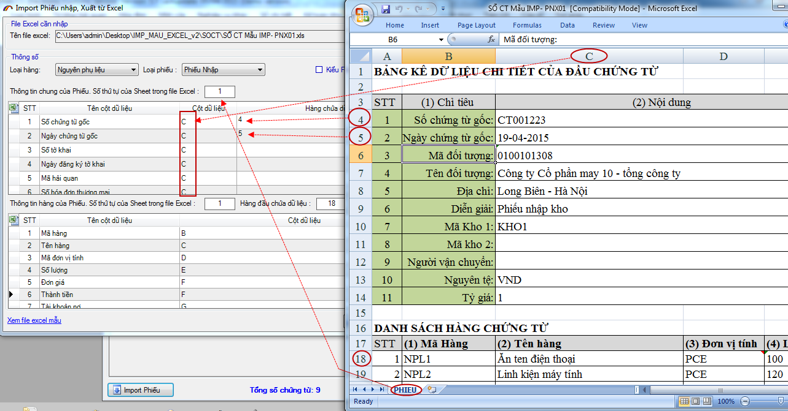
Thiết lập thông tin danh sách hàng :
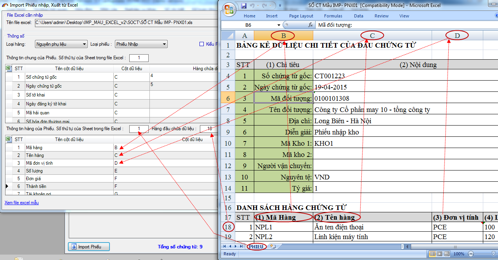
Sau khi đã thiết lập cấu hình xong bạn nhấn vào nút (…) để chọn đến thư mục có chứa các file excel phiếu chứng từ đã có:
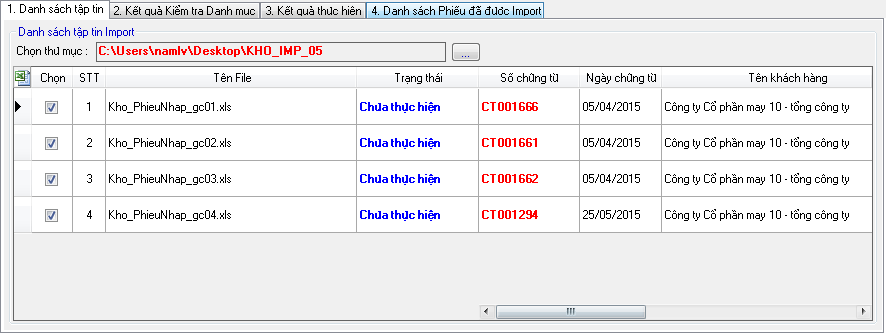
Phần mềm sẽ tự động load tất cả các file trong thư mục mà bạn chỉ định đồng thời kiểm tra xe cấu trúc có phù hợp với mẫu mà bạn đã chọn và cấu hình ở trên hay không. Các file phù hợp sẽ được tự động đánh dấu chọn và phần trạng thái kiểm tra là “Kiểm tra thành công, có thể import”.
Trường hợp kiểm tra thấy các mã trong danh sách hàng bạn đang đưa vào chưa có trong danh mục hoặc chưa được map danh mục với mã hàng ecus, phần mềm sẽ hiện danh sách và nội dung lỗi tại tab “2. Kết quả kiểm tra Danh mục”.
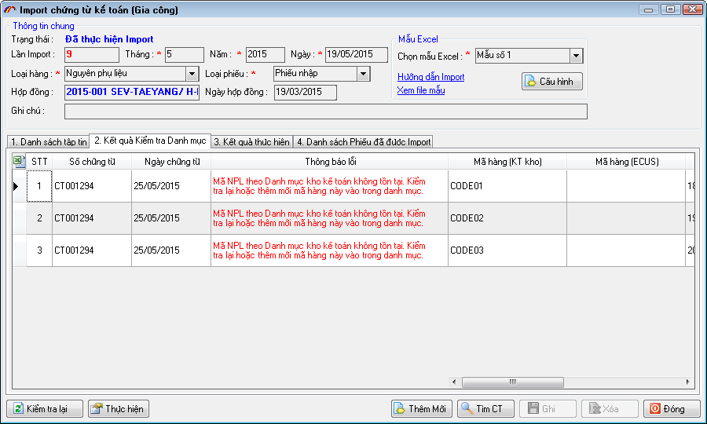
Bạn xem thông báo lỗi và thực hiện theo hướng dẫn của chương trình phần mềm.
Bạn nhấn nút ghi rồi nhấn vào “Thực hiện” để bắt đầu quá trình import các phiếu, thành công sẽ có thông báo như sau:
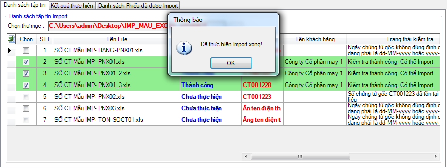
Màn hình thể hiện kết quả import :
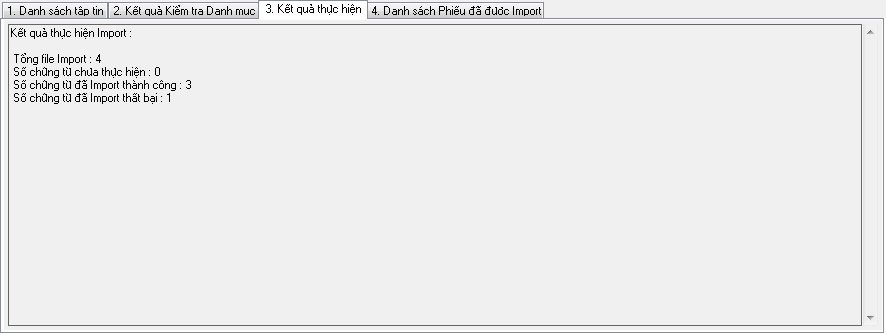
Màn hình hiện danh sách các phiếu đã được import thành công, tại đây bạn có thể click đúp chuột để xem chi tiết phiếu.
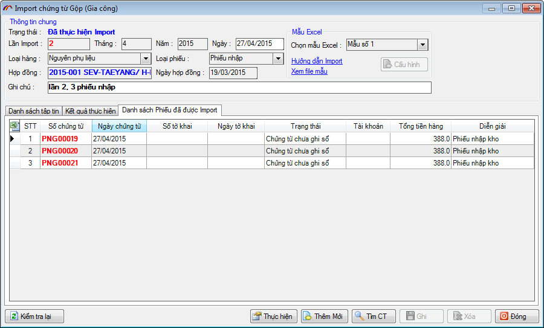
Nhấn đúp chuột để xem chi tiết từng phiếu
Bản quyền © thuộc về Công ty TNHH Phát triển công nghệ Thái Sơn